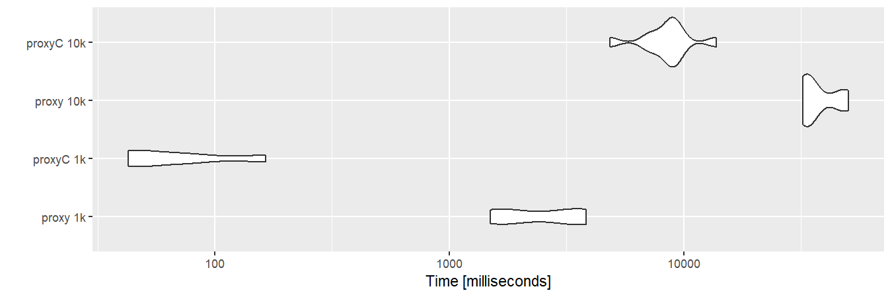
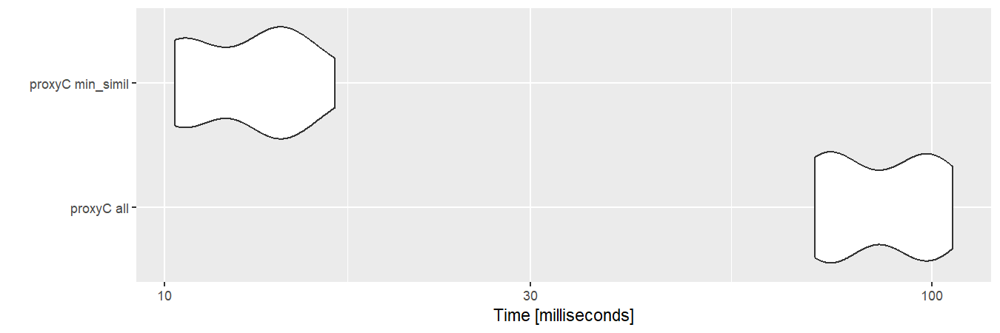
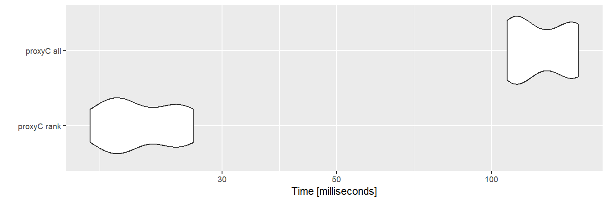

proxyC computes proximity between rows or columns of large matrices efficiently in C++. It is optimized for large sparse matrices using the Armadillo and Intel TBB libraries. Among several built-in similarity/distance measures, computation of correlation, cosine similarity and Euclidean distance is particularly fast.
This code was originally written for quanteda to compute similarity/distance between documents or features in large corpora, but separated as a stand-alone package to make it available for broader data scientific purposes.
Install
Since proxyC v0.4.0, it requires the Intel oneAPI Threading Building Blocks for parallel computing. Windows and Mac users can download a binary package from CRAN, but Linux users must install the library by executing the commands below:
install.packages("proxyC")Performance
require(Matrix)
## Loading required package: Matrix
require(microbenchmark)
## Loading required package: microbenchmark
require(ggplot2)
## Loading required package: ggplot2
require(magrittr)
## Loading required package: magrittr
# Set number of threads
options("proxyC.threads" = 8)
# Make a matrix with 99% zeros
sm1k <- rsparsematrix(1000, 1000, 0.01) # 1,000 columns
sm10k <- rsparsematrix(1000, 10000, 0.01) # 10,000 columns
# Convert to dense format
dm1k <- as.matrix(sm1k)
dm10k <- as.matrix(sm10k)Cosine similarity between columns
With sparse matrices, proxyC is roughly 10 to 100 times faster than proxy.
bm1 <- microbenchmark(
"proxy 1k" = proxy::simil(dm1k, method = "cosine"),
"proxyC 1k" = proxyC::simil(sm1k, margin = 2, method = "cosine"),
"proxy 10k" = proxy::simil(dm10k, method = "cosine"),
"proxyC 10k" = proxyC::simil(sm10k, margin = 2, method = "cosine"),
times = 10
)
autoplot(bm1)
Cosine similarity greater than 0.9
If min_simil is used, proxyC becomes even faster because small similarity scores are floored to zero.
bm2 <- microbenchmark(
"proxyC all" = proxyC::simil(sm1k, margin = 2, method = "cosine"),
"proxyC min_simil" = proxyC::simil(sm1k, margin = 2, method = "cosine", min_simil = 0.9),
times = 10
)
autoplot(bm2)
Flooring by min_simil makes the resulting object much smaller.
proxyC::simil(sm10k, margin = 2, method = "cosine") %>%
object.size() %>%
print(units = "MB")
## 763 Mb
proxyC::simil(sm10k, margin = 2, method = "cosine", min_simil = 0.9) %>%
object.size() %>%
print(units = "MB")
## 0.2 MbTop-10 correlation
If rank is used, proxyC only returns top-n values.
bm3 <- microbenchmark(
"proxyC rank" = proxyC::simil(sm1k, margin = 2, method = "correlation", rank = 10),
"proxyC all" = proxyC::simil(sm1k, margin = 2, method = "correlation"),
times = 10
)
autoplot(bm3)